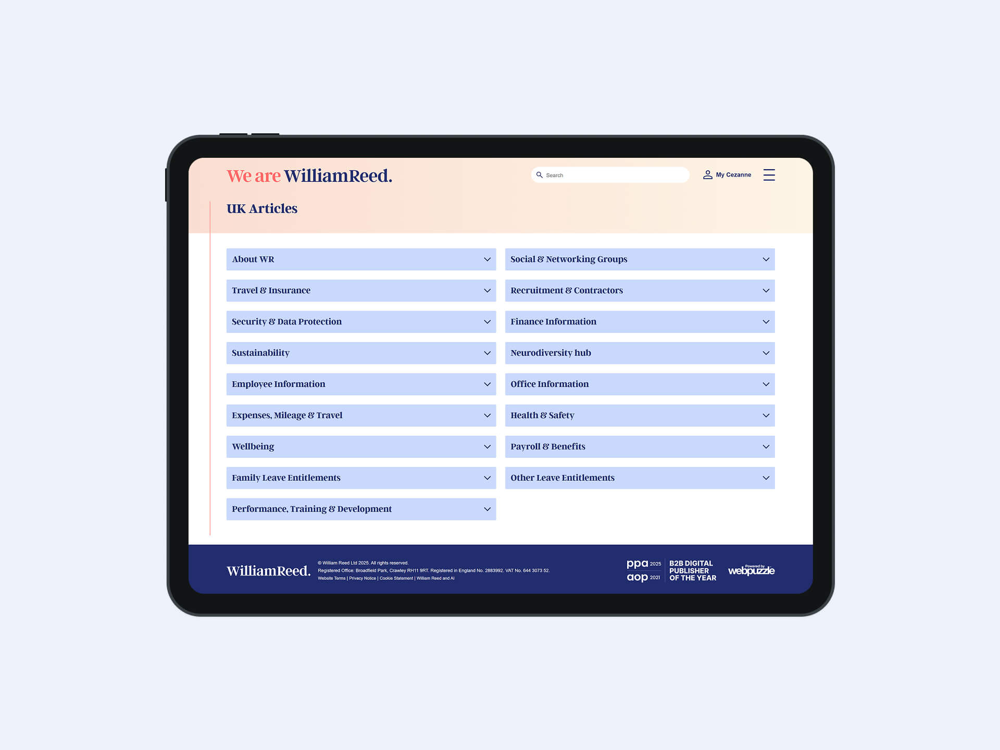

My role
I owned the full digital design process, from information architecture through to front-end build. I created wireframes, designed a modular UI system based on the new William Reed brand, and developed HTML and SASS templates. I worked closely with developers to ensure a smooth CMS integration.
Requirements
The new intranet had to be practical, lightweight, and easy to navigate. The specification included detailed functionality, which I translated into a flexible layout system that could accommodate different types of content: internal news, policy documents, HR resources and community posts.
Homepage
The homepage was designed around core tasks and information. I included a business news section, a block for community stories, a quick links area, and a widget to show global office time zones. All of this was structured to help users find what they need quickly without having to click through multiple levels.
Content creation had to be simple. I designed a way for staff to post community updates directly from the homepage without needing CMS access. For business posts, there were admin tools for HR to manage featured content and news visibility.
Company news
The news board was split into two areas: business news and community posts. Users could switch between them with a simple toggle, and content was ordered from newest to oldest posts. Each post displayed the headline, author, date, number of interactions and a visual. The layout was kept clean and easy to scan, helping users stay up to date with minimal friction.
Article
The article page introduced new functionality that hadn’t been part of the previous system. Logged-in users could now “like” posts and leave comments, creating a space for conversation around internal news and updates. Comments were displayed beneath the article with clear time stamps and names, encouraging transparency and engagement without overwhelming the layout.
Search
The search function was a key part of the experience. I designed a dedicated search results page and simple global search bar that would pull content from articles, business posts and policy documents.
Policies
The policies section needed to filter content by region. I designed a dedicated policies landing page and policies list view to keep documentation structured and easy to browse, depending on the user’s location.
Visual design
The UI followed William Reed’s updated brand, using its latest colours, typography and tone. I designed the pages to feel open, modern and easy to navigate, focusing on clarity and simplicity.